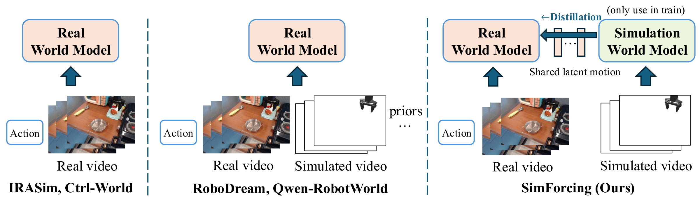
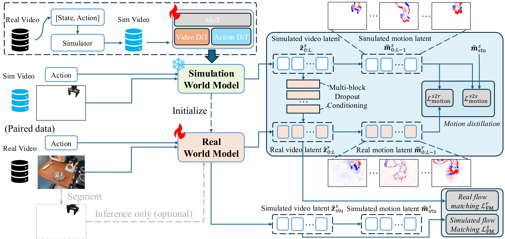

Learn in simulation
Replay and perturb robot action trajectories to train a simulation world model. Video and action transformers interact through Mixture-of-Transformers attention.
Peking University

Simulation provides structured robot motion, but its appearance differs from real video. SimForcing transfers temporal changes in latent space and uses predicted simulation latents as an adjustable reference for real-domain prediction.
Replay and perturb robot action trajectories to train a simulation world model. Video and action transformers interact through Mixture-of-Transformers attention.
A frozen simulation teacher supervises changes between adjacent video latents. The student learns motion knowledge while training on both simulation and real videos.
Simulation latents enter multiple transformer blocks with condition dropout. At inference, classifier-free guidance balances the student's internal motion priors and predicted simulation conditions.

Loading galleries…